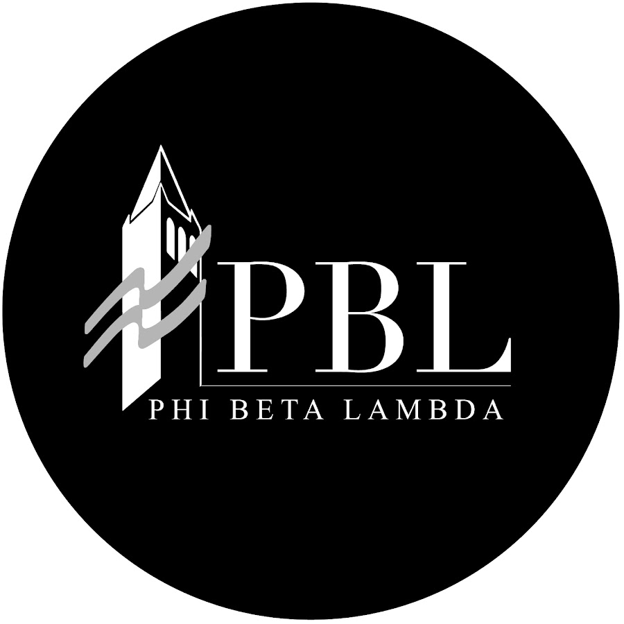
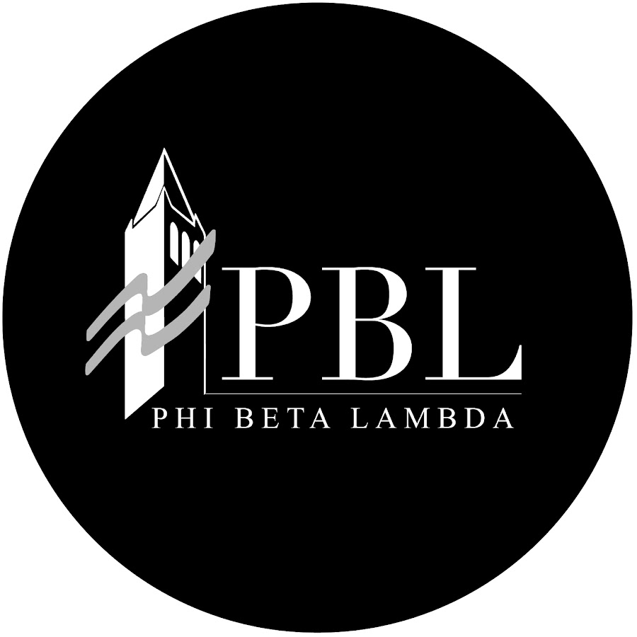
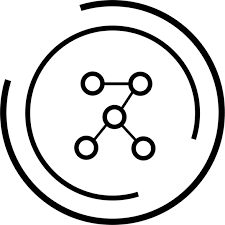

ABOUT ME
Hi! My name is Angela Jiang. I'm originally from Kansas City, and I'm a rising junior at UC Berkeley studying computer science and economics. I'm especially interested in learning more about back-end development, ML/AI, and fintech, and I also have a passion for teaching. This summer I will be a TA for Discrete Math and Probability as well as a data science research intern at the Johns Hopkins Applied Physics Laboratory. In my free time, I enjoy dance, tennis, and playing music. Some fun facts about me are that my favorite animal is a penguin, and I'm a huge foodie. Click on the icons to learn more about some of the organizations I'm involved in here at Berkeley.
 

